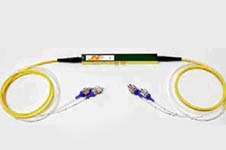
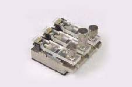
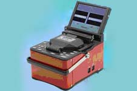

铒镱光电 ―― 项目展示
项目一：超高速光开关

插入损耗 < 3 dB (for 1x2 switch)
开关时间 100 ps
交叉干扰 < 20 dB (for polarization maintaining)
反射损耗 > 45 dB
工作波长 1550 nm (C- and L-band)
偏振极化 独立 / 保持
开关时间 100 ps
交叉干扰 < 20 dB (for polarization maintaining)
反射损耗 > 45 dB
工作波长 1550 nm (C- and L-band)
偏振极化 独立 / 保持
项目二：光纤V型槽夹具

V-Groove类型：
VGI-01型: 0.250 mm 光纤
VGI-02型: 0.900 mm 光纤
VGI-03型: 0.250 - 0.900 mm 光纤
设备尺寸: 50 x 50 x 50 mm
重量: 350 g
VGI-01型: 0.250 mm 光纤
VGI-02型: 0.900 mm 光纤
VGI-03型: 0.250 - 0.900 mm 光纤
设备尺寸: 50 x 50 x 50 mm
重量: 350 g
项目三：光纤熔接机 KeymanS1

纤芯对准系统
滑动的显示器
两个热缩管加热器
内装有高性能电池与监控器
可选择大容量的预备电池
熔接速度快（单模光纤9秒快速熔接，热缩管加热时间为26秒）
重量轻、体积小方便于携带
滑动的显示器
两个热缩管加热器
内装有高性能电池与监控器
可选择大容量的预备电池
熔接速度快（单模光纤9秒快速熔接，热缩管加热时间为26秒）
重量轻、体积小方便于携带